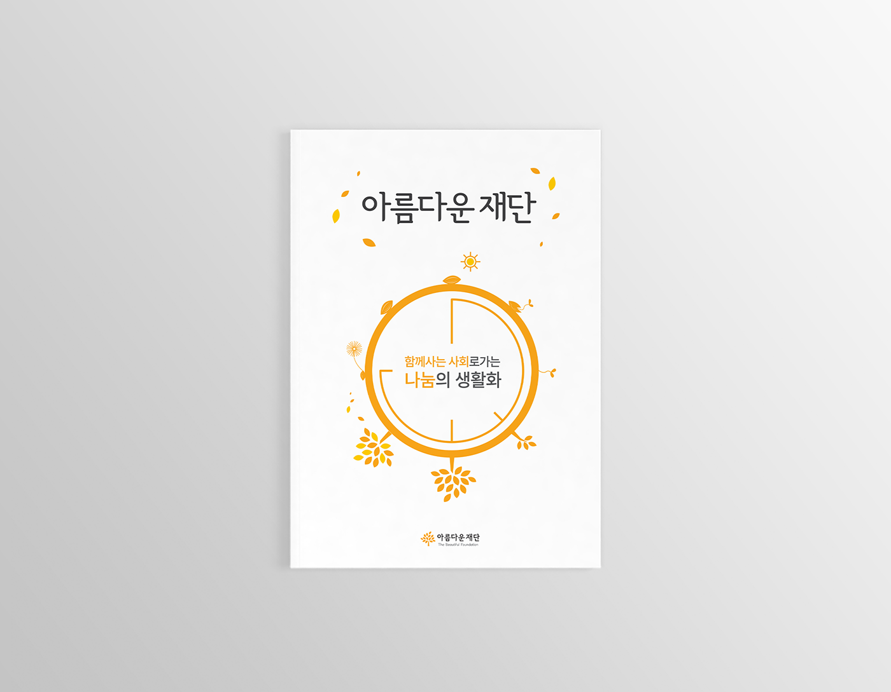
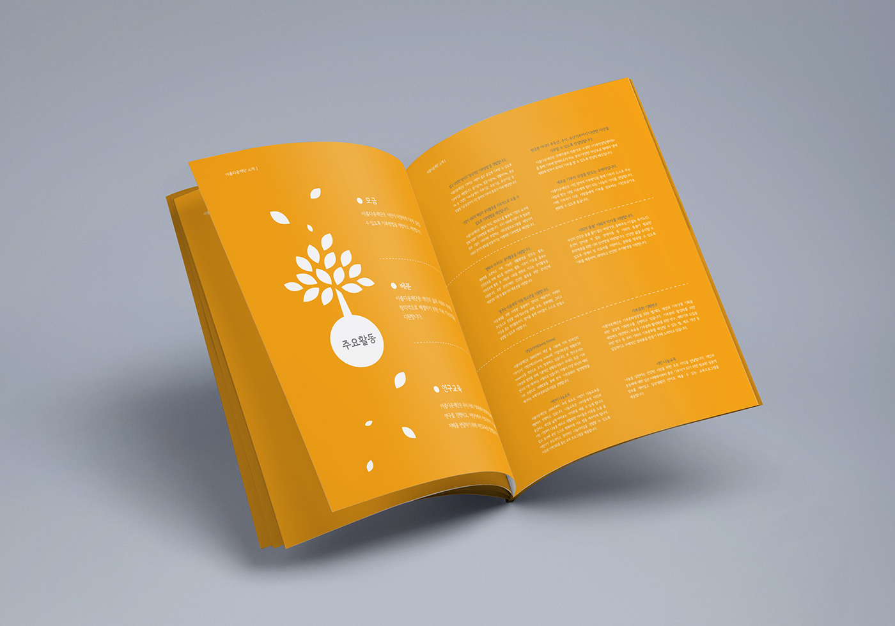
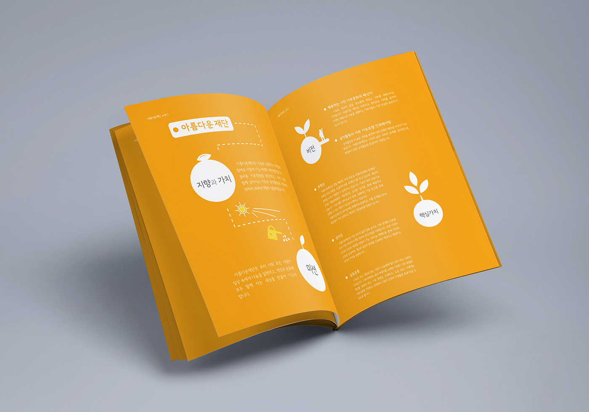
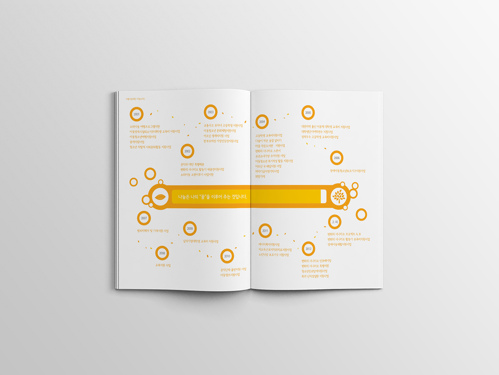

아름다운재단 소개책자
The Beautiful foundation
아름다운재단을 소개하는 8페이지 분량의 짧은 소개책자
| PERSONAL PROJECT | DATE |
| Editorial Design | 2013. 12. |
| Illustration |
01.
The Brief
아름다운재단은 대한민국의 NGO(Non-Governmental Organization)로, 공익활동을 지원하고 기부문화를 확산하는 여러가지 캠페인을 하고있다. 이를 소개하기 위해 짧은 8페이지의 브로슈어를 기획하였다.
02.
Design Direction
아름다운재단의 아이덴티티와 컬러시스템을 바탕으로 일러스트와 인포그래픽을 활용하였다. 표지에는 씨앗이 나무가 되는 순환의 과정을 표현하기 위해 일러스트를 직접 제작하여 나눔의 생활화라는 아름다운재단의 메세지를 전달하고자 하였다.
   